材料
※粉量を変えると自動計算されます
生地
塗り用
作り方
生地
STEP 1
仕込み水を作る
ぬるま湯にドライイーストを加え、しっかり混ぜ合わせます。
ぬるま湯にドライイーストを加え、しっかり混ぜ合わせます。
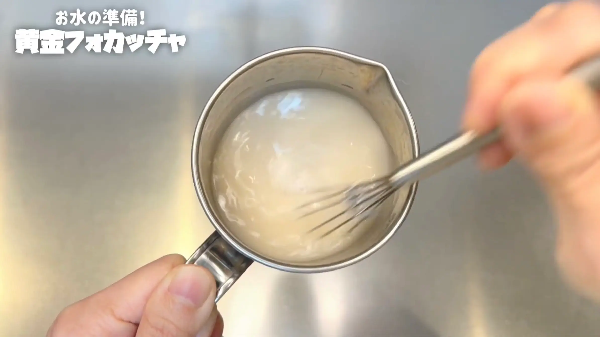
STEP 2
粉類に仕込み水を加え、混ぜる
強力粉に塩を混ぜ、仕込み水を加えてヘラで２分ほど混ぜます。粉と水を先になじませることで、粉の芯まで水分が行き渡り、焼き上がった後もしっとり感が残りやすくなります。少しベタつくくらいまで、しっかり混ぜ合わせます。
強力粉に塩を混ぜ、仕込み水を加えてヘラで２分ほど混ぜます。粉と水を先になじませることで、粉の芯まで水分が行き渡り、焼き上がった後もしっとり感が残りやすくなります。少しベタつくくらいまで、しっかり混ぜ合わせます。
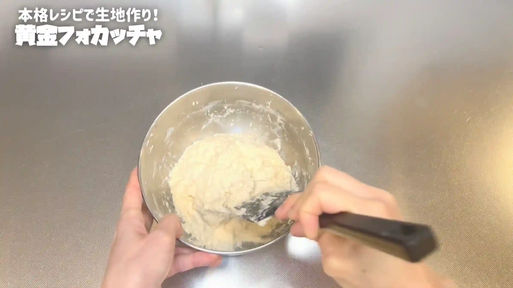
STEP 3
オリーブオイルを加え、手で混ぜる
オリーブオイルを加えて、手で２分ほど混ぜます。ここでは捏ねるというより、手で揉み込むようにしてオイルを生地になじませます。しっかり揉み込むことで生地に刺激が入り、発酵も安定しやすくなります。
オリーブオイルを加えて、手で２分ほど混ぜます。ここでは捏ねるというより、手で揉み込むようにしてオイルを生地になじませます。しっかり揉み込むことで生地に刺激が入り、発酵も安定しやすくなります。
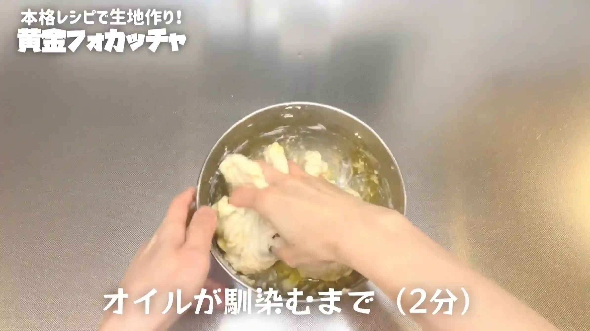
STEP 4
室温で30分おく
乾燥しないようにラップをして、室温で30分ほど生地を休ませます。休ませることで生地がゆるみ、次の工程で伸ばしたり畳んだりしやすくなります。
乾燥しないようにラップをして、室温で30分ほど生地を休ませます。休ませることで生地がゆるみ、次の工程で伸ばしたり畳んだりしやすくなります。
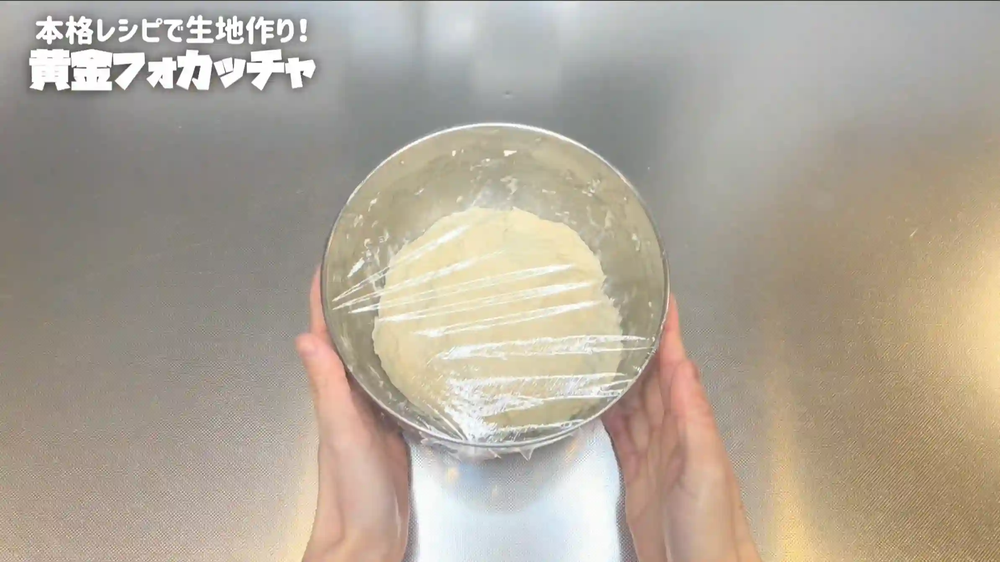
STEP 5
オーブンシートで型を作る
オーブンシートを画像のように折り、縦18㎝×横18㎝×高さ6㎝の型を作ります。細かいサイズは焼き上がりにほぼ影響しないため、大体でOKです。
オーブンシートを画像のように折り、縦18㎝×横18㎝×高さ6㎝の型を作ります。細かいサイズは焼き上がりにほぼ影響しないため、大体でOKです。
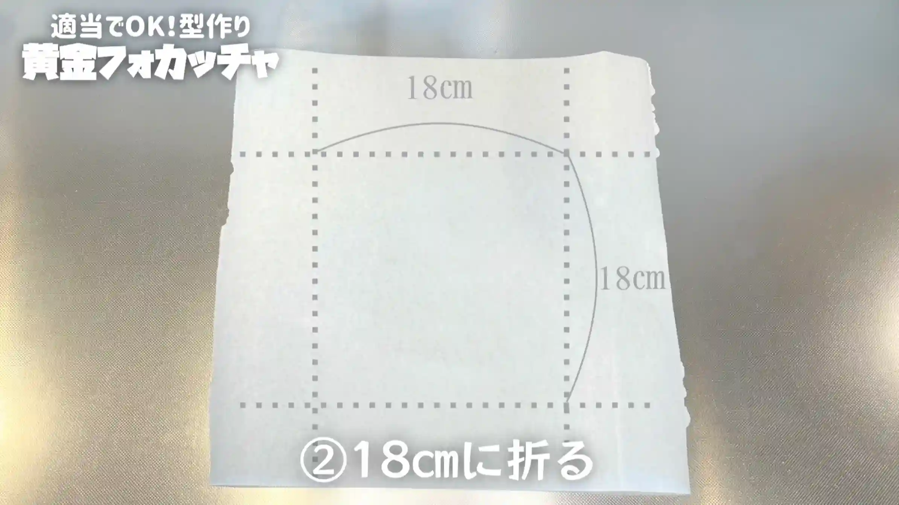
STEP 6
生地を伸ばして畳む（[動画 06:24]）
生地がベタつくため、しっかりと手を濡らして作業します。生地を少しずつ伸ばし、中央に折り畳んでいきます。これをボウル2周分おこない、全体がなじむよう生地をひっくり返して、次の工程へ進みます。
生地がベタつくため、しっかりと手を濡らして作業します。生地を少しずつ伸ばし、中央に折り畳んでいきます。これをボウル2周分おこない、全体がなじむよう生地をひっくり返して、次の工程へ進みます。
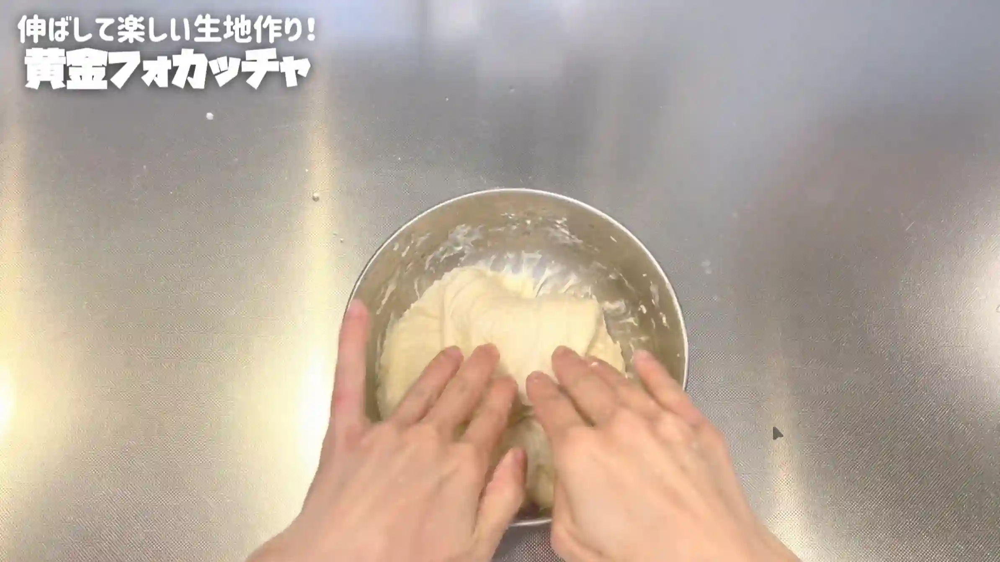
STEP 7
室温で生地が2倍に膨らむまでおく
乾燥しないようにラップをして、一次発酵させます。60分〜90分を目安に、生地が元の約2倍に膨らみ、表面に小さな気泡が出てくるまでゆっくりおくのがポイントです。
乾燥しないようにラップをして、一次発酵させます。60分〜90分を目安に、生地が元の約2倍に膨らみ、表面に小さな気泡が出てくるまでゆっくりおくのがポイントです。
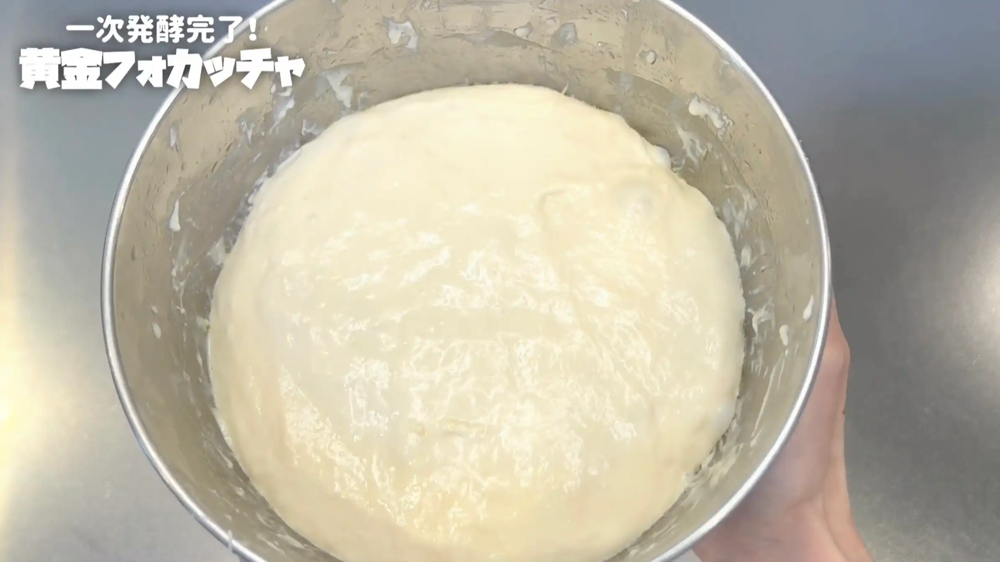
STEP 8
生地にオリーブオイルを塗る（[動画 08:45]）
型に入れる前に、生地の表面とボウルの縁にオリーブオイルを薄く塗っておきます。こうすることで、生地がボウルから離れやすくなり、型に入れるときも生地を扱いやすくなります。
型に入れる前に、生地の表面とボウルの縁にオリーブオイルを薄く塗っておきます。こうすることで、生地がボウルから離れやすくなり、型に入れるときも生地を扱いやすくなります。
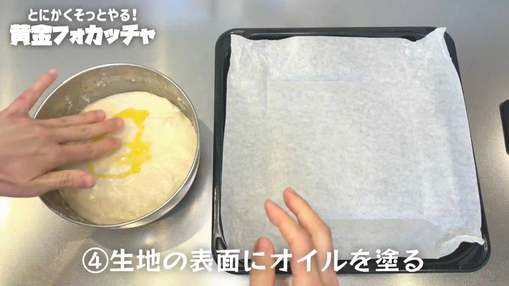
STEP 9
生地を型にのせ、形を整える（[動画 09:46]）
オーブンシート型は、箱型を一度ほどいてフラットな状態にしておくと、作業しやすくなります。生地をなるべく型の中央にのせ、手でやさしく広げて形を整えます。生地がベタつくため、手で広げるのが難しい場合は、無理に広げずそのまま焼いてもOKです。生地が薄い部分はカリカリに、厚い部分はふんわりと焼き上がり、おいしく仕上がります。
オーブンシート型は、箱型を一度ほどいてフラットな状態にしておくと、作業しやすくなります。生地をなるべく型の中央にのせ、手でやさしく広げて形を整えます。生地がベタつくため、手で広げるのが難しい場合は、無理に広げずそのまま焼いてもOKです。生地が薄い部分はカリカリに、厚い部分はふんわりと焼き上がり、おいしく仕上がります。
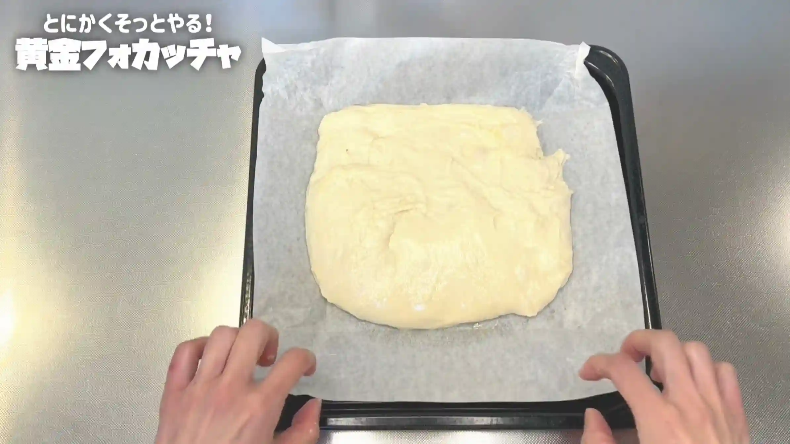
STEP 10
室温で40分おく
オーブンシート型を閉じ、乾燥しないようにラップをして、二次発酵させます。生地がふっくらとしてきたら、次の工程へ進みます。
オーブンシート型を閉じ、乾燥しないようにラップをして、二次発酵させます。生地がふっくらとしてきたら、次の工程へ進みます。
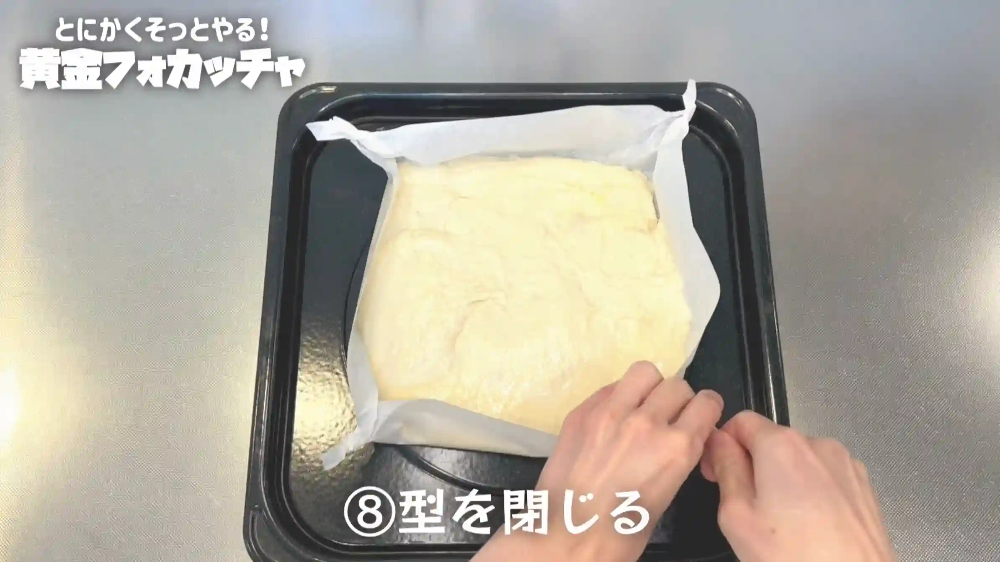
STEP 11
オーブンを210℃に予熱する
生地を焼く前に、オーブンを210℃に予熱しておきます。
生地を焼く前に、オーブンを210℃に予熱しておきます。
STEP 12
トッピングをして生地に穴をあける
生地の表面にオリーブオイルをたっぷり塗り、トッピングをのせます。最後に指で穴をあけ、オイルが生地になじむようにします。
生地の表面にオリーブオイルをたっぷり塗り、トッピングをのせます。最後に指で穴をあけ、オイルが生地になじむようにします。
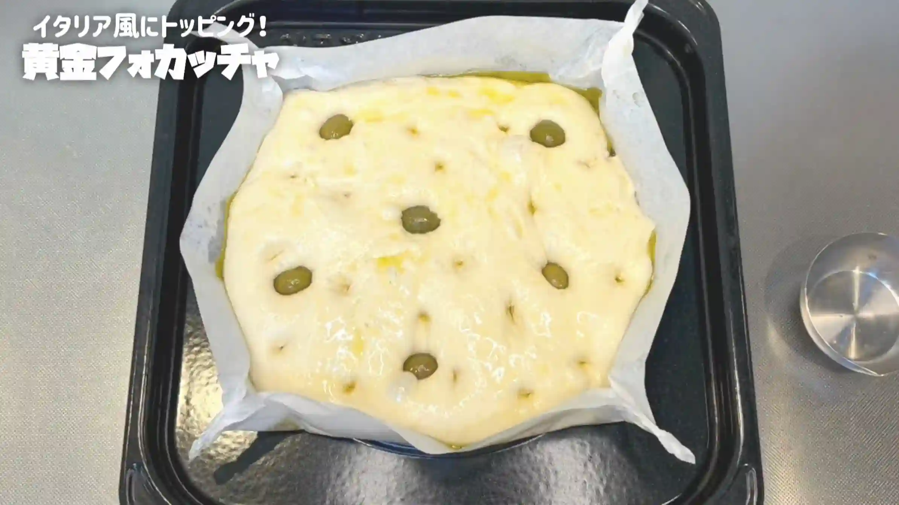
STEP 13
オーブン210℃で26分焼く
オーブン210℃で26分、表面が黄金色になるまでしっかり焼きます。お砂糖を使わない生地なので焦げにくく、オリーブオイルで揚げ焼きするように焼くことで、表面をカリカリに仕上げます。焼き色を見ながら、ご家庭のオーブンに合わせて調整してください。
オーブン210℃で26分、表面が黄金色になるまでしっかり焼きます。お砂糖を使わない生地なので焦げにくく、オリーブオイルで揚げ焼きするように焼くことで、表面をカリカリに仕上げます。焼き色を見ながら、ご家庭のオーブンに合わせて調整してください。
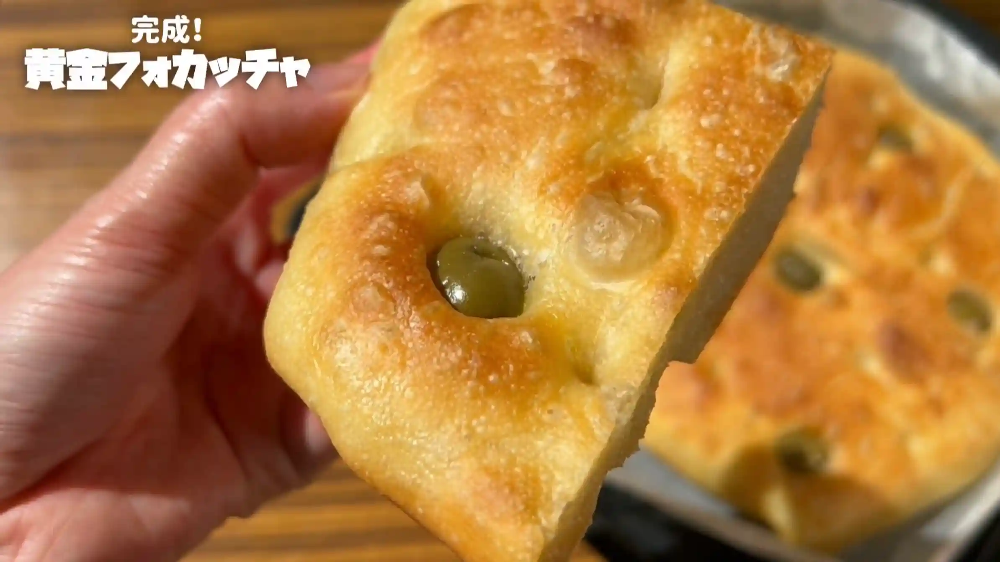
動画でチェック
おいしく作るためのワンポイントコラム
「こんなに美味しくできるなんて！」と自分でも驚いた、外はカリカリ＆中はしっとりふわふわに焼き上がる『ゴールデンフォカッチャ』。本場イタリアのレシピを参考に研究を重ねて誕生しました！スーパーで手に入るシンプルな材料ばかりですが、工程に少し工夫を加えるだけで驚くほど格別な味わいに。今回は、綺麗な黄金色に焼き上げる『ゴールデンフォカッチャ』の「3つのコツ」をまとめました。
① カリカリに焼くコツ
今回のレシピでは、発酵を助ける役割のお砂糖をあえて一切使わないのが最大のポイント！これによりオーブンで長時間焼いても生地が焦げにくくなり、美しい金色になるまでオリーブオイルでしっかり揚げ焼きすることができます。この揚げ焼きが、カリッと香ばしくクリスピーな食感を生み出します！
② オイルは後入れでしっとり生地
オイルを加える前に、まずは粉とお水を先にしっかり混ぜ合わせること！この段階で粉の芯まで水分を徹底的に吸わせることが、焼き立てはもちろん、日が経ってもずっとしっとり感を長持ちさせる秘訣です。少し面倒なので最初から材料を全部まとめて混ぜたくなりますが、このひと手間が驚くほど大きな効果を発揮します。焼きたてはもちろん、少し時間を置いてから食べるときに「作ってよかった！」と違いを感じていただけるはず！
③ 揉み込みでふんわり生地
粉と水が馴染んだら、ここでオリーブオイルを投入します。そして、ハンバーグを作るように、生地とオイルを手揉みでしっかり揉み込んでいくのがポイント！オイルを優しく馴染ませながら生地へ均一に刺激を与えることで、冬場でも発酵がグンと安定しやすくなります。このひと手間で、驚くほどふっくら生地に仕上げることができます！
オリーブオイルで揚げ焼きされた金色の生地は、表面はパリッと香ばしくクリスピーで、中は極上のしっとりふわふわ感！海外のSNSでスライスオニオンをのせて香ばしく焼き上げているのをよく見かけるので、新玉ねぎの季節に作るのも楽しみです。ぜひみなさんも、この最高の一枚を焼き上げてみてください！
① カリカリに焼くコツ
今回のレシピでは、発酵を助ける役割のお砂糖をあえて一切使わないのが最大のポイント！これによりオーブンで長時間焼いても生地が焦げにくくなり、美しい金色になるまでオリーブオイルでしっかり揚げ焼きすることができます。この揚げ焼きが、カリッと香ばしくクリスピーな食感を生み出します！
② オイルは後入れでしっとり生地
オイルを加える前に、まずは粉とお水を先にしっかり混ぜ合わせること！この段階で粉の芯まで水分を徹底的に吸わせることが、焼き立てはもちろん、日が経ってもずっとしっとり感を長持ちさせる秘訣です。少し面倒なので最初から材料を全部まとめて混ぜたくなりますが、このひと手間が驚くほど大きな効果を発揮します。焼きたてはもちろん、少し時間を置いてから食べるときに「作ってよかった！」と違いを感じていただけるはず！
③ 揉み込みでふんわり生地
粉と水が馴染んだら、ここでオリーブオイルを投入します。そして、ハンバーグを作るように、生地とオイルを手揉みでしっかり揉み込んでいくのがポイント！オイルを優しく馴染ませながら生地へ均一に刺激を与えることで、冬場でも発酵がグンと安定しやすくなります。このひと手間で、驚くほどふっくら生地に仕上げることができます！
オリーブオイルで揚げ焼きされた金色の生地は、表面はパリッと香ばしくクリスピーで、中は極上のしっとりふわふわ感！海外のSNSでスライスオニオンをのせて香ばしく焼き上げているのをよく見かけるので、新玉ねぎの季節に作るのも楽しみです。ぜひみなさんも、この最高の一枚を焼き上げてみてください！


本場イタリアのレシピを参考に、綺麗な焼き色とカリカリ食感を追求した『ゴールデンフォカッチャ』のレシピです！材料はシンプルですが、生地作りの工程に少し工夫を加えるだけで極上の仕上がりに。コラムでは、「あえての砂糖なし生地」「オイルは後入れでしっとり生地」「揉み込みでふんわり生地」の3つのコツをご紹介します。